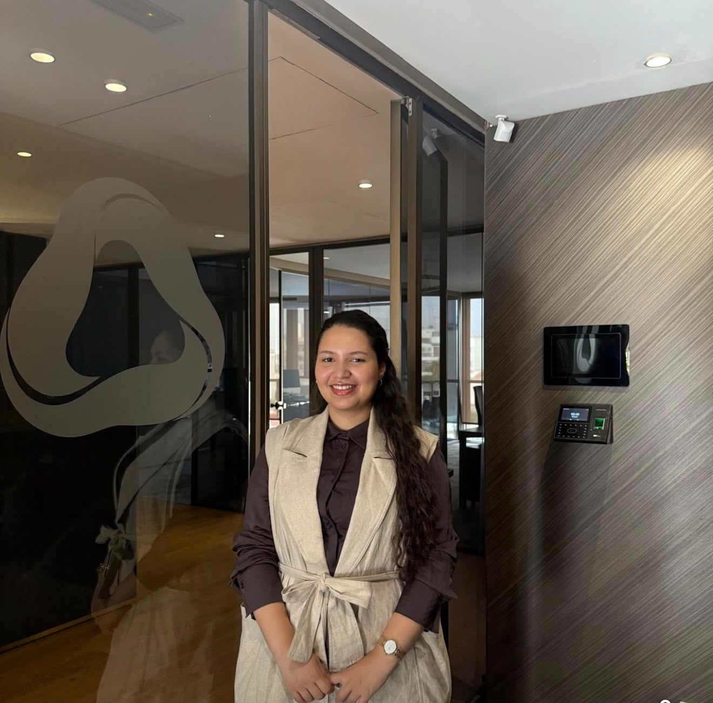

Portfolio · Finance quantitative
Hajar
Belhafid
Élève ingénieure en Finance et Ingénierie Décisionnelle à l’ENSA Agadir. Je présente ici mes travaux en valorisation, gestion de portefeuille et développement d’outils pour les marchés financiers.
Découvrir mes projets ↓
Travaux académiques et professionnels
Projets
OPCVMFlow
Une application Flask pour centraliser les ordres institutionnels, rapprocher achats et ventes et analyser les inventaires OPCVM.
Découvrir le projetArbres et calibration
Comparaison des arbres CRR et trinomiaux, étude de la calibration de Derman–Kani et application au Butterfly Spread.
Découvrir le projetValorisation des options vanilles
Comparaison de Black–Scholes et Monte Carlo avec réduction de variance, et étude de l’exercice anticipé avec Longstaff–Schwartz.
Découvrir le projetSimulation stochastique et pricing
Discrétisation d’EDS, analyse de convergence et apprentissage d’un prix de référence par réseau de neurones.
Découvrir le projetCapiScoop
Segmentation d’actions et d’OPCVM par K-means et optimisation de portefeuille selon le modèle de Markowitz.
Découvrir le projet